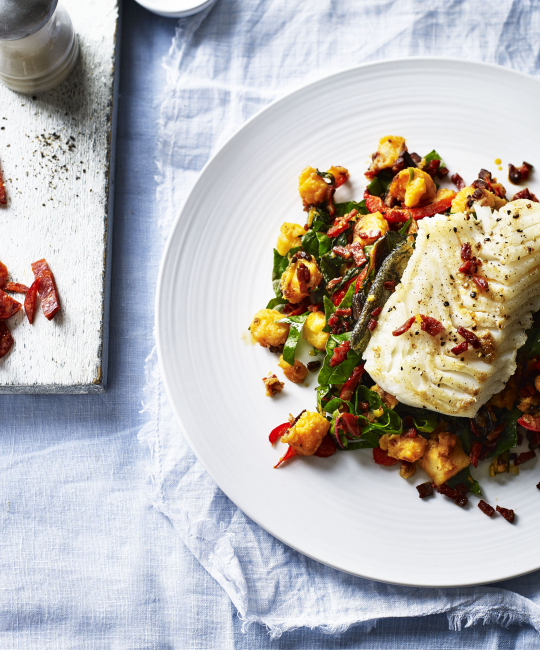

Cod & Potato Hash

Description
I was talking to my family the other day, and it dawned on me that I have no memory of why I found
this recipe. I don't know if I was looking for a cod dish, a potato dish, or maybe even a spinach
dish. I can't recall! I have to say though, it's a classic. It's quickly been assigned as my signature
dish by everyone I've cooked it for. It's a real hit.
It's so incredibly simple - only a few ingredients needed and next to no technical ability in the kitchen is required.
The flavours all match together so perfectly, and the chorizo (as it so often is) is the real star of
this dish. Its smokey taste really punches through, it's glorious. Let's get into it!
Ingredients
- 400g fluffy potatoes (Maris Piper are great)
- 4 x 150g cod loin fillets, skin on
- 1bsp rapeseed oil
- 100g chorizo, finely chopped
- 1/2tsp smoked paprika
- 1 red pepper, cut into thin strips
- 150g rainbow chard or spinach, roughly chopped
Method
- Preheat your oven to 180C/Gas 4.
- Bring a saucepan of water to the boil, add the cubed potatoes and cook until tender, drain.
- Place a large frying pan over a medium-high heat, season the cod loins with salt and milled pepper
and rub the olive oil all over. Pan fry on the skin side for 5 minutes,
transfer to an oven tray and cook in the oven for about 10 minutes,
depending on the thickness of your cod.
- Meanwhile in the same pan add the chorizo and a little more rapeseed oil if required.
- Cook the chorizo over a medium heat until the oils come out, next add the potatoes and sprinkle the paprika over.
Continue frying until the potatoes start to crisp on the edges while stirring every so often.
- Add the peppers and chard, pop a lid on, turn the heat down and cook until the chard wilts.
- Divide the potato and chorizo mixture between your plates, top with the cod and serve.